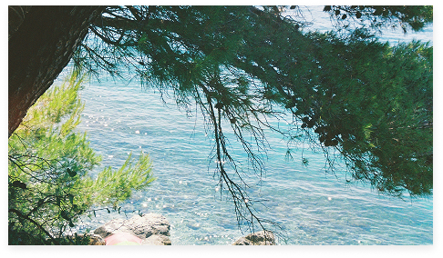
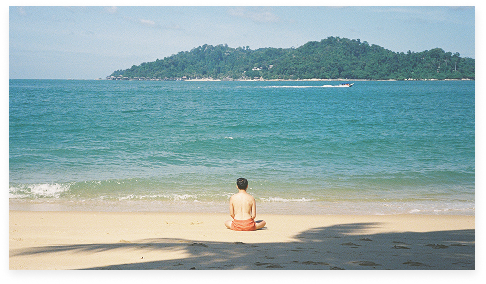
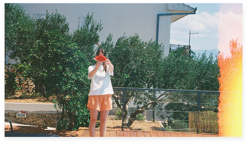
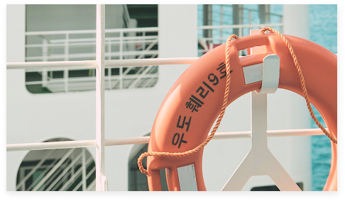

내가 저장한 섬
My islands
내 마음에 들어온 섬들을 살펴보세요.
내가 저장한 섬
My islands
내 마음에 들어온 섬들을 살펴보세요.
나의 항해 일지
My voyage log
비진도
2026 . 07 . 19 ~ 2026 . 07 . 21
매일 수영하는 아침
올 여름, 작고 활기찬 섬을 찾아 통영으로 떠났다. 그 첫 번째 섬이 비진도였다. 작은 아령처럼 생긴 이 귀여운 섬은 홀쭉한 해변으로
유명하다.
양쪽으로
펼쳐지는 해변을 볼 수 있는 한국의 유일한 섬일지도 모른다.
작은 섬에서는 하루가 단순하게 흘러간다. 아침에 일어나 간단하게 차려 먹고 나갈 채비를 한다. 우선 수영복 위에 평상복을 걸친다.
전날
널어둔
비치타올을 예쁘게 개켜 가방에 넣는다. 수경도 빼놓을 수 없다. 그런 다음 민박집 공용주방으로 가서 오이를 썰어 용기에 넣는다. 그날의
간식이다.
마지막으로
작은 물병에 물을 담으면 끝.
여름 해변은 아침에 가장 한적하다. 부지런한 사람들이 느긋하게 자연을 누리는 모습도 볼 수 있다. 해맑게 웃는 아이들부터 은근슬쩍
미소
짓는
어른들까지. 나는 그 사이에 비치타올을 펼쳐 자리를 잡는다. 그런 다음 수영복 위에 걸쳤던 옷을 벗고 수경을 장착, 준비 운동을 마친 후
입수!
수면
위로
올라와 숨을 뱉는다. 푸하아-. 하루가 시작되는 소리다.

Edit증도
2026 . 09 . 01 ~ 2026 . 09 . 02
염전에서 들리는 라디오 소리
증도는 전라남도 신안군에 위치한 섬이다. 부산에서 나고 자란 나에게 신안은 매우 낯선 이름이었다. 그러다 한 지인을 통해 신안의 어느 작은 섬
증도에 대해 알게 되었다.
그는 어느 방송국의 라디오 PD였다. 나는 라디오 PD가 정확히 무슨 일을 하는지, 그는 어쩌다 그 일을 하게 되었는지 물었다. 대학에서
신문방송학을 전공했던 그는 졸업을 앞두고 담당교수에게 라디오 PD가 되고 싶다고 했다가 순진하다는 말을 듣고 실의에 빠졌었다고 한다. 자리가 잘
나지 않는다고. 그때 여행을 떠난 곳이 신안의 증도였다. 그는 그곳에 머무는 닷새 동안 섬 전체를 한 바퀴 돌기로 했다. 그러다 마지막 날
염전을 산책하면서 어떤 순간이 펼쳐졌다. 일꾼들이 염전의 소금을 긁는 소리만 들리는 그곳에서 익숙한 듯 이질적인 소리가 들려왔다. 염전에
가까워질수록 선명해지던 그 소리는 일꾼이 틀어둔 라디오 소리였다. 순간 그는 저 사람만 내 라디오를 들어준다면 기꺼이 라디오 PD가 되어 저
사람만을 위한 방송을 만들겠다고 다짐했다고 한다. 그뒤로 거짓말처럼 공고가 났고 무사히 라디오 PD가 되어 지금까지도 그 자리를 지키고 있다.

Edit굴업도
2026 . 10 . 15 ~ 2026 . 10 . 17
꿈에 그리던 섬에서 생긴 일
올 여름, 작고 활기찬 섬을 찾아 통영으로 떠났다. 그 첫 번째 섬이 비진도였다. 작은 아령처럼 생긴 이 귀여운 섬은 홀쭉한 해변으로 유명하다.
양쪽으로
펼쳐지는 해변을 볼 수 있는 한국의 유일한 섬일지도 모른다.
작은 섬에서는 하루가 단순하게 흘러간다. 아침에 일어나 간단하게 차려 먹고 나갈 채비를 한다. 우선 수영복 위에 평상복을 걸친다. 전날
널어둔
비치타올을 예쁘게 개켜 가방에 넣는다. 수경도 빼놓을 수 없다. 그런 다음 민박집 공용주방으로 가서 오이를 썰어 용기에 넣는다. 그날의
간식이다.
마지막으로
작은 물병에 물을 담으면 끝.
여름 해변은 아침에 가장 한적하다. 부지런한 사람들이 느긋하게 자연을 누리는 모습도 볼 수 있다. 해맑게 웃는 아이들부터 은근슬쩍 미소
짓는
어른들까지. 나는 그 사이에 비치타올을 펼쳐 자리를 잡는다. 그런 다음 수영복 위에 걸쳤던 옷을 벗고 수경을 장착, 준비 운동을 마친 후 입수!
수면
위로
올라와 숨을 뱉는다. 푸하아-. 하루가 시작되는 소리다.

Edit우도
2026 . 11 . 3 ~ 2026 . 11 . 4
섬에서 맞이하는 가을
올 여름, 작고 활기찬 섬을 찾아 통영으로 떠났다. 그 첫 번째 섬이 비진도였다. 작은 아령처럼 생긴 이 귀여운 섬은 홀쭉한 해변으로 유명하다.
양쪽으로
펼쳐지는 해변을 볼 수 있는 한국의 유일한 섬일지도 모른다.
작은 섬에서는 하루가 단순하게 흘러간다. 아침에 일어나 간단하게 차려 먹고 나갈 채비를 한다. 우선 수영복 위에 평상복을 걸친다. 전날
널어둔
비치타올을 예쁘게 개켜 가방에 넣는다. 수경도 빼놓을 수 없다. 그런 다음 민박집 공용주방으로 가서 오이를 썰어 용기에 넣는다. 그날의
간식이다.
마지막으로
작은 물병에 물을 담으면 끝.
여름 해변은 아침에 가장 한적하다. 부지런한 사람들이 느긋하게 자연을 누리는 모습도 볼 수 있다. 해맑게 웃는 아이들부터 은근슬쩍 미소
짓는
어른들까지. 나는 그 사이에 비치타올을 펼쳐 자리를 잡는다. 그런 다음 수영복 위에 걸쳤던 옷을 벗고 수경을 장착, 준비 운동을 마친 후 입수!
수면
위로
올라와 숨을 뱉는다. 푸하아-. 하루가 시작되는 소리다.

Edit1 2 3 4